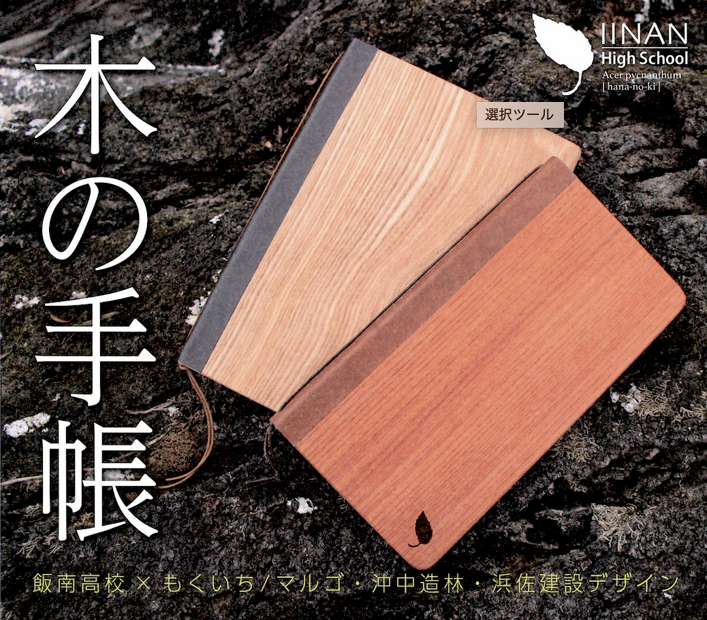
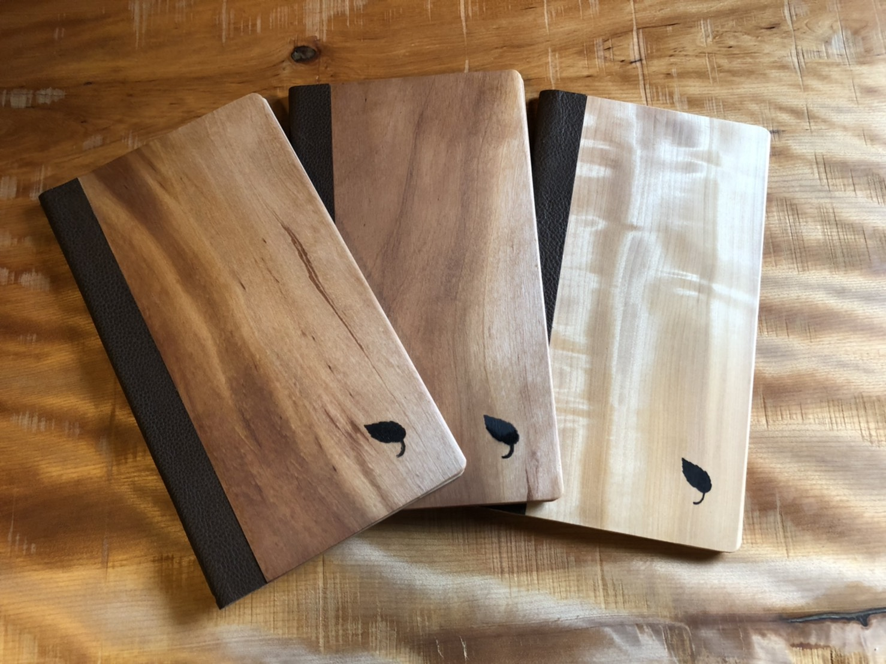
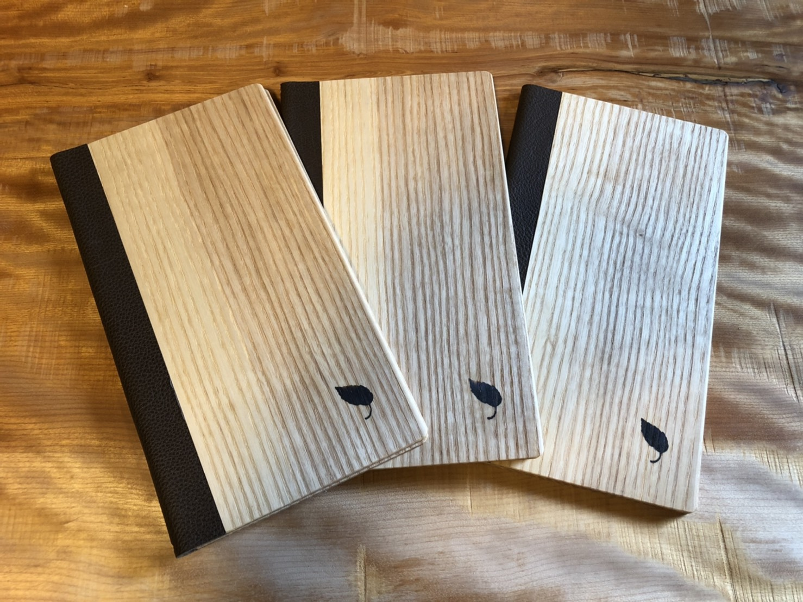
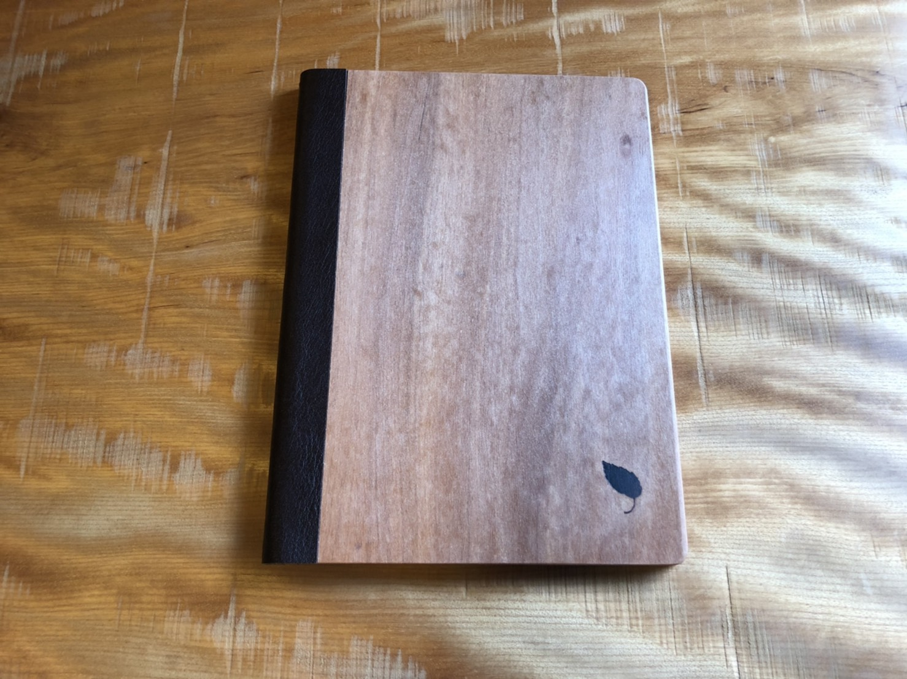

木の手帳
飯南高等学校と地元企業
コラボレーション作品
木の手帳




高校生の地域への思いがつまった温かみのあるこの手帳は、
木の加工職人により一つ一つが手作業で行われており、使い続けることでより味わいが増してきます。
また木のぬくもりが感じられ、高校生の地元愛がつまったデザインとなっています。
私たちは活動の中で、地元の魅力を、地域素材を利用し発信できないかと考えました。学校の周りにはどのようなものや仕事があるのかを調べる中で、自然が豊かであり、木に囲まれた地域ということに着目し、製材加工会社「もくいち／マルゴ株式会社」さんを訪ねました。
その中でこの地域が木と共に発展してきたこと、木を管理することで山や川、海を守っていることを学習しました。
また「沖中造林株式会社」さんが管理する山に入れていただき、木の壮大さを肌で触れ、その木を利用し、地域を知ってもらうため・地域にお金を生み出すことを目標に商品開発が始まりました。約１年をかけて、月に２回程度の会議を開き、アイデアを商品という形あるものにしていきました。
高校生の意見と企業側の意見を何度も交わしながら、商品の開発・デザイン・ロゴ・値段・販売方法まで生徒が企業と共に計画的に進めました。